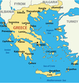
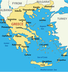

𝔾𝕣𝕖𝕖𝕜 ℍ𝕚𝕤𝕥𝕠𝕣𝕪
The history of Greece encompasses the history of the territory of the modern nation state of Greece as well as that of the Greek people and the areas they inhabited and ruled historically. The scope of Greek habitation and rule has varied throughout the ages and as a result the history of Greece is similarly elastic in what it includes. Generally, the history of Greece is divided into the following periods:
 

- 3,000 BC Bronze is introduced into Greece
- 2,500 BC A sophisticated society arises on Crete
- 1,900 BC Writing is invented in Crete
- 1,600 BC Civilization spreads to mainland Greece
- 1,450 BC Minoan culture declines
- 1,200 BC Mycenaean civilization goes into decline
- 800 A new civilization arises in Greece
- 490 BC The Persians invade Greece but are defeated
- 480 BC The Persians invade again but are defeated again
- 477 BC Athens forms the Delian League
- 431-404 BC Athens and Sparta fight the Peloponnesian War
- 371 BC Thebes wins the battle of Leuctra
- 338 BC Philip of Macedon defeats the Greeks in battle
- 336 BC Alexander the Great succeeds his father
- 333 BC Alexander defeats the Persians at the battle of Issus
- 323 BC Alexander dies
- 168 BC The Romans defeat Macedon
- 86 BC The Romans capture Athens
- 395 AD The Roman Empire permanently splits
- 610-641 AD Emperor Heraclius rules
- 1054 AD The Eastern Orthodox Church separates from the Catholic Church
- 1204 Crusaders capture Constantinople
- 1261 The emperor recaptures Constantinople
- 1683 The Turkish Empire starts to decline
- 1814 The Filiki Eteria is founded
- 1821 The Greeks rebel
- 1827 The Turkish fleet is destroyed at the battle of Navarino
- 1829 Greece becomes independent
- 1833 Prince Otto of Bavaria becomes king of Greece
- 1863 King George I succeeds him
- 1893 The Corinth Canal opens
- 1896 The Olympic Games are revived in Greece